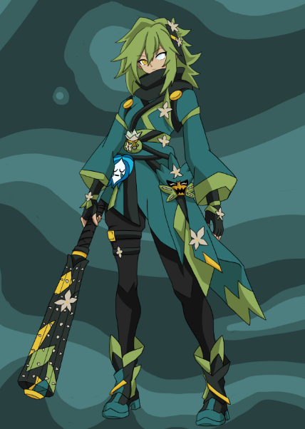

Mylène
[ image :
Zobal Mylène ]
Zobal Mylène ]

Mylène, 35 ans- Âge
- 35 ans
- Sexe
- Féminin
- Classe
- Zobal
- Travail
- Gardienne du Dofus émeraude
- Taille / poids
- 1 m 65 – 70 kg

Mylène, 35 ansOriginaire du royaume sadida, Mylène est pourtant la fille d’un Zobal : de lui, elle tient sa classe et ses croyances, tandis que son apparence rappelle celle de sa mère, une Sadida. Elle vit aujourd’hui au jours le jours voyageant de ville en ville sans faire de trop longue pause.
D’un naturel chaleureux, Mylène est douce dans ses gestes comme dans ses paroles. Souriante et très empathique, elle met tout en œuvre, en mission, pour que ses compagnons ne soient jamais gravement blessés : la peur de perdre un coéquipier ne la quitte jamais.
La mort de son père lui a laissé un traumatisme et une phobie des cadavres. Depuis son affrontement contre Kanm, elle est en outre aveugle de l’œil gauche.
Protéger son Dofus de Kanm à tout prix.
Comme les Sadidas, Mylène aime la nature, les siestes au soleil, les infusions de thé, les animaux et les environnements paisibles, surtout les forêts humides. Dans un coin secret de son havre-sac, elle cultive ses propres plantes médicinales. Elle apprécie aussi marcher pieds nus dans l’herbe, écouter les chants d’oiseaux et façonner des objets en bois. Côté gourmandise, tout ce qui est sucré la comble, avec une véritable addiction au miel.
Malgré son kanobo et la puissance magique de ses masques, Mylène se bat dans un style proche de la capoeira : ses jambes font l’essentiel du travail, dans une danse impressionnante, et le kanobo ne vient qu’en complément, pour porter des coups plus lourds.
Ce masque bleu en forme de cœur arbore un visage serein. Ses pouvoirs sont liés à l’eau : sa porteuse peut la maîtriser, mais aussi s’en servir pour se soigner à son contact. Cependant, plus elle y recourt pour guérir, plus son corps s’épuise : après quelques minutes de soins continus, elle perd connaissance (entre 5 et 10 tours, selon la gravité des blessures).
Quand elle puise son Wakfu dans le Dofus, son corps compense moins : elle peut garder le masque et soigner plus longtemps.
Ce masque vert en forme de feuille offre des capacités dévastatrices. Mylène peut renforcer temporairement un atout physique ou magique pour frapper plus fort et surprendre son adversaire : force ou vitesse décuplées, ou encore manipulation de la terre et de la roche alentour. Sa faiblesse est aussi sa force : chaque aptitude augmentée en affaiblit une autre. Et changer de configuration demande quelques secondes, soit une action.
Ce masque, en forme de flamme rouge et jaune, permet à sa porteuse de se défouler. Il génère de puissantes flammes et autorise le vol, au prix de Wakfu, dont ses grosses réserves lui donnent une belle endurance. Malgré son air résolument offensif, il l’aide à se calmer en évacuant peu à peu sa colère.
Le Dofus booste les flammes et permet d’énormes accélérations en vol.
Mylène naquit au royaume sadida il y a 30 ans et mena une vie assez ordinaire jusqu’à ses 10 ans, quand un œuf vert apparut devant elle et ses parents : c’était le Dofus émeraude, envoyé chez eux pour qu’ils le protègent. Par sécurité, la famille quitta alors le royaume sadida, malgré les messages, et s’installa sur l’île des Zobals, où le père avait grandi et reçu son masque.
À 12 ans, lors de la cérémonie traditionnelle, elle reçut son premier masque. Le village entier fut surpris : au lieu des teintes habituelles des Zobals, il arborait un vert éclatant. Elle prit le temps d’en découvrir les pouvoirs, ainsi que ceux de son corps, déjà naturellement avantagé, et les années s’écoulèrent paisiblement. À 16 ans, un ancien du village, au crépuscule de sa vie et soucieux que son héritage ne se perde pas, lui confia le masque de la sérénité, qui s’accorderait à merveille avec le style de combat de la jeune femme.
Il fallut ensuite attendre longtemps avant que les choses changent, jusqu’à ses 19 ans, quand des dizaines de roublards attaquèrent le village pour s’emparer du Dofus. En voulant le défendre, son père trouva la mort : l’un des assaillants l’atteignit en plein vol d’un tir très précis, lui arracha son masque et l’envoya vers sa fille. Le père s’écrasa à côté d’elle et, avant de rendre son dernier souffle, lui confia la garde du Dofus émeraude. Sa mère l’expédia aussitôt dans son havre-sac pour qu’elle fuie, munie d’une potion de rappel, jusqu’à Bonta.
Arrivée à Bonta, il lui fallut trouver de quoi vivre, et l’idée qui s’imposa fut de devenir aventurière, ce qui lui permit de progresser. Moins d’un an plus tard, elle décida pourtant de s’y installer pour de bon : elle ouvrit une petite boutique où vendre ses trouvailles, ainsi qu’une clinique où elle soignait les blessures de ceux qui n’avaient pas forcément les moyens de consulter une Eniripsa.
Elle refusait cependant de traiter les blessures graves, qui lui coûtaient bien trop de Wakfu, d’autant qu’une Eniripsa resterait toujours plus compétente qu’elle. Elle ne voulait pas non plus qu’on apprenne qu’elle possédait un Dofus, dont elle ne se servait que lors de ses combats en solitaire. Elle mena cette vie pendant plusieurs années, son précieux œuf à l’abri dans son havre-sac. Sa boutique, dont le petit local passait officiellement pour son appartement, lui offrait pourtant, grâce à ce havre-sac, un vaste espace rien qu’à elle.
C’est à 26 ans que, lors d’une mission, elle se retrouva face à Aerafal, venu la combattre pour juger si elle était digne de devenir la gardienne du Dofus émeraude. Au terme d’un long combat, il la désigna comme telle. Elle reprit ensuite son travail, plus confiante en ses capacités de combat.
Après une expédition destinée à regarnir sa boutique, la Zobal tomba sur l’un des 9 masques primordiaux, à l’origine de la culture zobale. Elle le récupéra et en fut la gardienne pendant quelques mois, jusqu’à ce qu’une réunion des gardiens soit organisée. Tout se passa d’abord bien : elle y retrouva des visages connus et en rencontra de nouveaux. Mais le rassemblement tourna court : Kanm surgit en plein milieu de la ville. Les gardiens, qui comptaient alors parmi les personnes les plus puissantes de Bonta, durent lutter pour permettre l’évacuation et protéger leurs Dofus.
Mylène et Tezla se trouvaient en première ligne, face à cet homme, et lui opposaient tout ce qu’ils avaient. Portée par la force du masque de la colère, elle lui avait sûrement brisé quelques côtes, mais il suffit d’une fraction de seconde, durant laquelle l’ennemi des dieux reporta toute son attention sur elle, pour que la situation bascule. Il lui arracha son masque avant de lui asséner une droite si violente que, malgré le reliquat de force que lui procurait encore l’objet et la barrière d’énergie dressée par son Dofus, elle fut assommée sur le coup et projetée à plusieurs kilomètres de la cité. Par chance, le vol fut si long que l’œuf eut le temps de former un bouclier de Wakfu, qui amortit sa chute sans qu’elle soit blessée.
Mais un coup pareil laisse toujours des séquelles : une dizaine de minutes plus tard, à son réveil, elle sentit du sang couler le long de son visage et constata qu’elle ne voyait plus rien de l’œil gauche. Quand elle y porta les mains, elle ne rencontra que le vide : ce monstre le lui avait détruit… Elle récupéra vite son masque de la sérénité et se servit de l’eau environnante pour tenter de le soigner, mais les dégâts étaient trop profonds : elle parvint seulement à refermer la plaie, ne laissant qu’un trou. Cela fait, elle se redressa et prit la direction de Bonta, mais elle avait à peine parcouru 100 mètres lorsqu’elle croisa Tezla, dans un état pire encore que le sien. Elle renonça au combat pour aller aider l’autre gardien et l’accompagna jusqu’à un endroit sûr.
Elle passa ensuite plusieurs semaines à son chevet, l’aidant à se remettre de ses blessures et à traiter sa maladie grâce au stock de remèdes qu’il ne pouvait plus s’injecter lui-même. Elle apprit à mieux connaître le steamer, au point qu’ils devinrent de véritables amis. Au bout d’un certain temps, ils se séparèrent, chacun partant de son côté pour la sécurité de leurs Dofus, tout en gardant un moyen de rester en contact.
Mylène entreprit alors un voyage à travers le monde pour rouvrir son commerce en tant que marchande itinérante, son havre-sac lui permettant de toujours disposer d’un petit stock à vendre au sortir des donjons. Elle parcourut ainsi pendant plusieurs années les routes du Monde des Douze, s’entraînant au fil des nombreux donjons qu’elle enchaînait, afin de ne jamais manquer de marchandises.